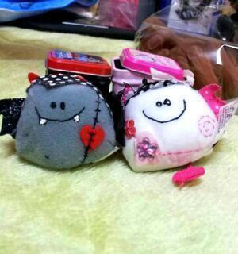
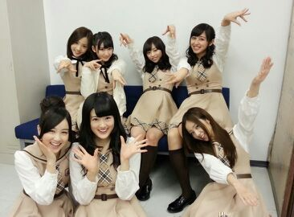

http://s.ameblo.jp/nogizakablog-new/entry-11750123275.html
よろしくね↑
こんばんわっ ろってぃ-だよ〜♪ヽ(´▽｀)/
今日は 朝から 撮影でした！
早く皆さんのもとへ 届け〜い(/・ω・)/
ってキモチですん.♪
最近メンバーがね、
｢今ろってぃ-的に言うと'嬉しいキモチ！'｣とかいってくれて
嬉しゅうキモチです。
正月にね、
お母さんが雑貨屋さんで福袋を買ってきて
袋をあけると、中から色々雑貨が出てきたの♪
これ、ろってぃ-ままさんのお気に入り。
可愛いー可愛いーゆうてるの 笑
Adalbert 【アダルベルトくん】 と
Franzi 【フランツィちゃん】。

直径 四センチ位の正方形のカンカンのフタを
開けると、何かシッポみたいなんが
出てきて、シッポを引っこ抜くと
『スポンッ...』 って
この 妖怪さんがギュウギュウになって入ってあって
お母さんと一緒に 「可愛いw(*≧∀≦*)」ってしてた 笑
底にも説明書みたいなのが入っていて
この子たちの性格が書かれてあったの。
書くね。
アダベルト君は辛い失恋を繰り返して
ハートが傷ついたこともある。
けれど、それでま、この世で一番大切なのは
「 LOVE 」って知ってる男の子。
大きなハートで世界中に愛を届けます。
フランツィちゃんはポジティブで明るい性格。
いつも前向きで、どんな物事にも
長所を見つけることができる女の子。
一緒にいるといつも明るい気持ちでいられる。
可愛いすぎる。
たまに こういう物見ると 癒されるね...(/*´ω`*)/
以上.♪あは
楽屋にて、、、 一枚目。
何か普通すぎない？ってなって、、、、
２枚目、これ。

のし。 Rotty.♪